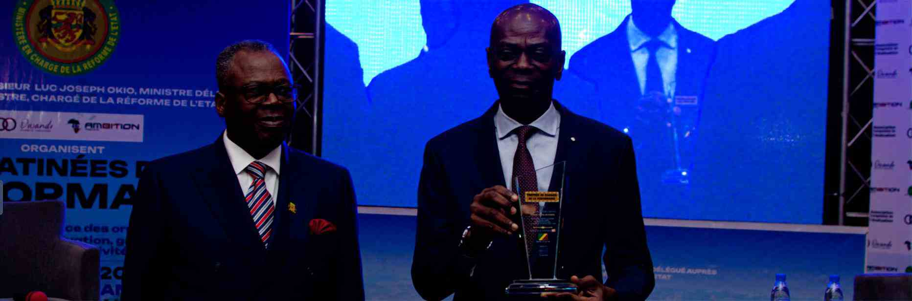
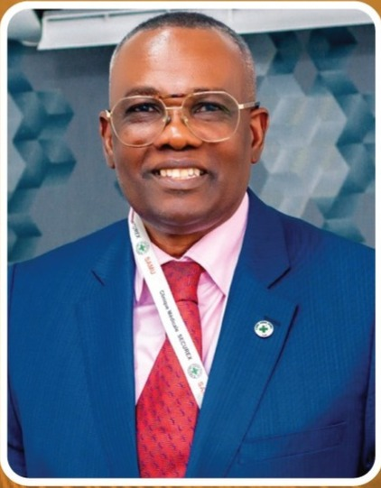
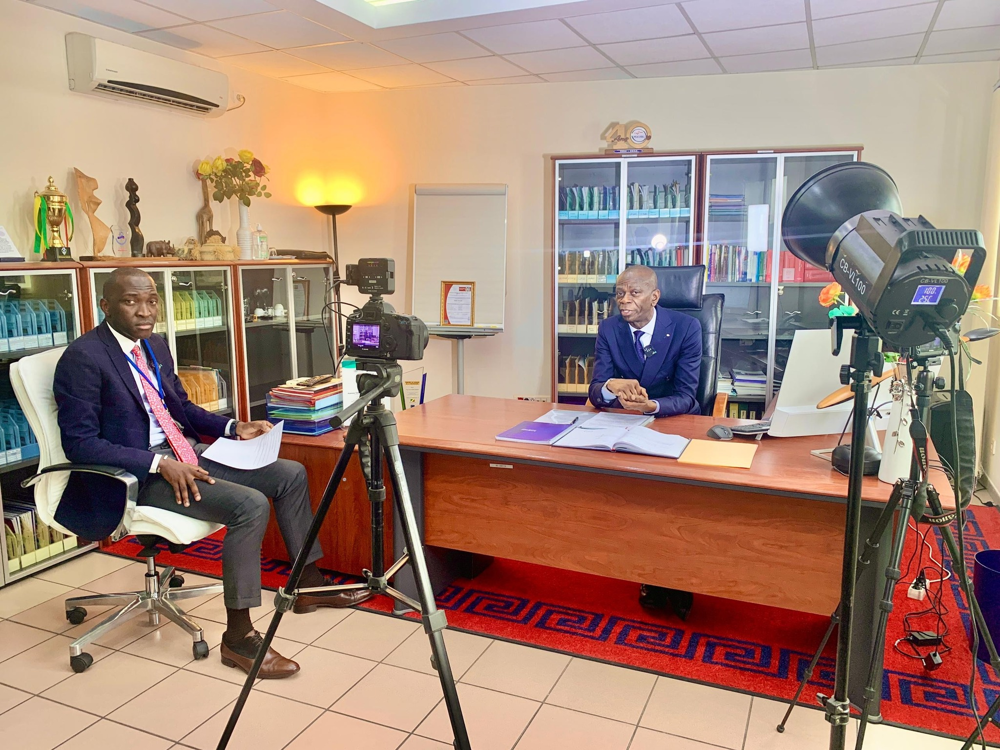

Dr Séverin Aimé Blanchard Ouadika
Maître-assistant CAMES · Directeur général de l’évaluation des réformes au ministère en charge de la réforme de l’État.
Organisée le 29 août 2025 à Brazzaville sous le patronage de Monsieur Luc Joseph Okio, Ministre délégué auprès du Premier Ministre, chargé de la réforme de l'État, la première édition des Matinées de la Performance a réuni décideurs publics, dirigeants d'entreprises et spécialistes de l'évaluation.

La première édition s'est tenue autour du thème : « Gouvernance et résilience des organisations au Congo : comment articuler suivi-évaluation, gestion des risques et continuité d'activité ? »
Initiative : Owando Consulting
Co-organisation : Agence Ambition et Association Congolaise de l'Évaluation (ACE)
Date et horaires : 29 août 2025 (7h30 – 12h30), Hôtel Grand Lancaster, Brazzaville
Moment fort de la rencontre du 29 août 2025, la remise officielle du Trophée du Manager de la Performance en présence de Monsieur le Ministre délégué chargé de la réforme de l'État a consacré la reconnaissance de l'engagement managérial au service de la performance des organisations congolaises.


Maître-assistant CAMES · Directeur général de l’évaluation des réformes au ministère en charge de la réforme de l’État.

Managing Partner d'Owando Consulting · Consultant senior certifié PMP®, ISO 9001/31000/22301.
Conseiller à la qualité du service public au ministère du contrôle d’État, de la qualité du service public et de la lutte contre les antivaleurs.

Président de l’Union nationale des opérateurs économiques du Congo (UNOC).


